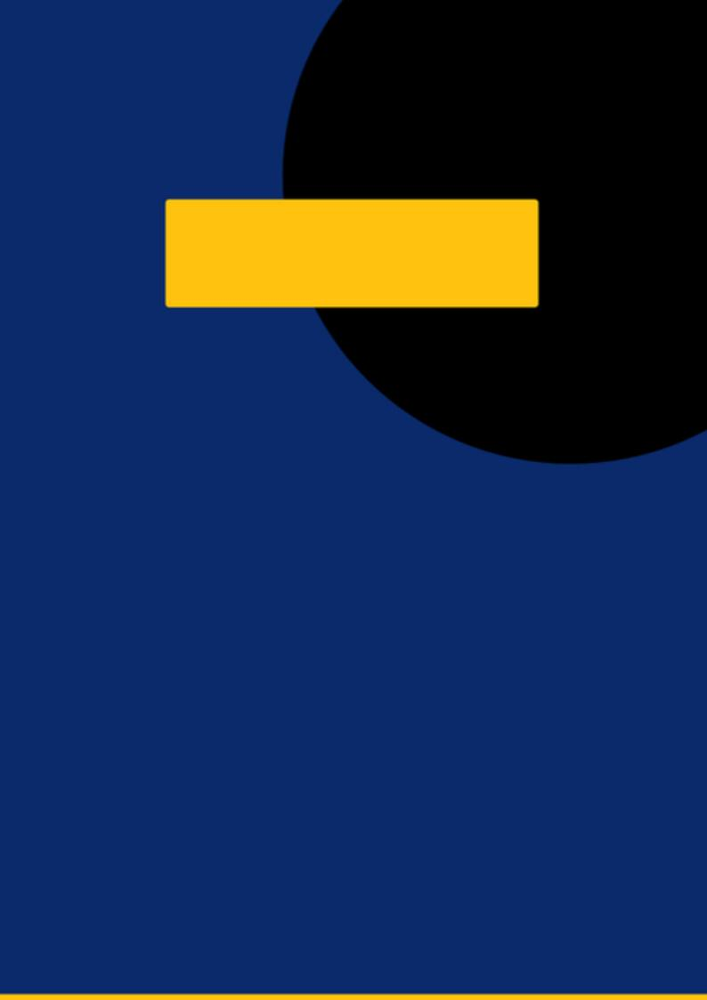

E S P E C I A L · A R T I G O D E O P I N I Ã O
11
IA E RESSONÂNCIA
MAGNÉTICA
P O R D R . A L E X S A N D R O F E R R E I R A · T E C N Ó L O G O E M R A D I O L O G I A
“Estamos diante de uma mudança tecnológica ou de uma
redefinição da própria profissão? A resposta parece apontar para
a segunda alternativa.”
RM
+
produtividade sem
perder o olhar clínico
0
substituição do
profissional humano
o interior do exame,
agora com algoritmos